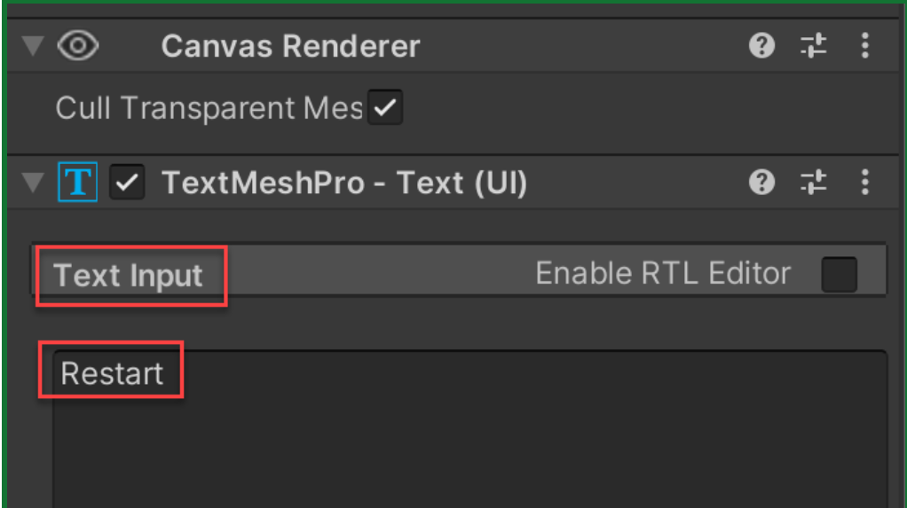

Understand the UI game
Watch the official Unit 5 — Introduction. This is the chapter introduction, before the individual lessons. Look for the objects, score, start choices and end-of-round controls.
How was this made?
- How does the game know which moving object the mouse clicked?
- Why does the score stay in the same screen corner?
- What changes when the player starts, loses, or restarts?
- How can three similar buttons produce different difficulty levels?
A user interface is how a player reads the game’s situation and asks it to do something. In this chapter, a player needs to know the score, distinguish helpful targets from harmful ones, choose a difficulty, recognize a loss and begin again. You will build that complete loop through four implementation lessons.
Prior-knowledge recap. Basic Gameplay introduced prefab spawning and random selection. Sound and Effects coordinated particles with events. Gameplay Mechanics used state and coroutines. Here you will write those mechanisms again where they connect to the UI, with new material on pointer selection, Canvas layout, text components and button events.
Learning outcomes
By the end of this lecture, you will be able to:
- Build a target loop with random launch motion, a list of prefabs, timed spawning and sensor cleanup.
- Trace a mouse click from screen coordinates through a 3D raycast to exactly one target.
- Configure a Canvas and TextMeshPro display that remains readable across screen shapes.
- Keep score data, particle feedback, game state and visible controls consistent.
- Connect restart and difficulty buttons through Inspector events and code listeners.
Chapter route
The four implementation lessons form one continuous project. Complete the project preparation before class, then work through target selection, score, game over, restart and difficulty choices.
| Unity unit item | Work in this chapter | Finished checkpoint |
|---|---|---|
| 5.1 · Clicky Mouse | Sections 01–03: motion, lists, spawning, mouse rays and sensor | Targets launch, respond to clicks and clean up |
| 5.2 · Keeping Score | Sections 04–05: Canvas, text, points and particles | Every valid hit updates score and feedback |
| 5.3 · Game Over | Sections 06–07: shared state and restart | Loss blocks play; restart restores a fresh round |
| 5.4 · What’s the Difficulty? | Section 08: title hierarchy, callbacks and parameters | Menu starts Easy, Medium or Hard |
| Quiz 5 | Eight local understanding checks | Predictions and corrections, not just copied code |
New conceptPointer selection
A mouse position is a point on the screen. A target lives in the 3D scene. The game must connect the two: imagine a straight line passing from the view through the cursor. The first target-shaped collider on that line is the object the player selected. Moving the mouse over a target and clicking it are different actions.
New conceptScreen layout
The interface lives on a Canvas. A Rect Transform describes a UI element’s rectangle; anchors decide which part of its parent it follows. A score can remain near the upper-left while a title stays centered. Scaling adjusts the size of the interface when the window changes; it does not replace those positioning rules.
New conceptData, state and feedback
The score number is data. The score text is a display of that data. Game state records whether the player is still playing. A hit can update the score and create a particle burst, while a miss can stop further play and reveal a restart button. These responses should agree with each other.
New conceptEvents and parameters
A button announces an event when it is clicked. A connected method responds to that event. Several buttons can call the same behavior with different settings: Easy waits longer between targets, while Hard waits less. You will use both Inspector connections and listeners registered in code.
Prepare the project and target prefabs
Use the official Prototype 5 assets in a fresh project. The supplied scene provides artwork and a sensor; you will create the gameplay and UI scripts yourself. Work outside Play mode whenever you change scene objects or Inspector references.
Prepare a predictable Unity 6.3 scene.
- Create a fresh 3D Built-In Render Pipeline project in Unity 6.3. Download the official Prototype 5 starter ZIP, extract it, and import
Prototype-5_Starter-Files_U6.unitypackagethroughAssets → Import Package → Custom Package. OpenAssets/Scenes/Prototype 5.unityand save a copy namedUser Interface. - Open
Window → Package Manager, choose Unity Registry, and install Input System if needed. InEdit → Project Settings → Player → Other Settings → Configuration, setActive Input HandlingtoInput System Package (New)and accept the Editor restart. In Input System Package settings, useProcess Events In Dynamic Update. - Select Main Camera: tag
MainCamera, position(0, 0, -10), rotation(0, 0, 0), projection Orthographic, size5. Move the supplied Background to(0, 0, 2)and Border parent to(0, 0, 0). This deliberately recenters the original artwork, which starts around y = 5. - Select Sensor. Set position
(0, -10, 0), scale(1, 1, 1), Box Collider Center(0, 0, 0), Size(30, 1, 4), and enableIs Trigger. Create the tagDestroyZoneusing Add Tag, then return to Sensor and assign it. Save. - Download the empty chapter scripts and put
Target.csandGameManager.csinAssets/Scripts. They contain class shells only. Confirm the Console has no compile errors. Do not import the final references yet.
Video references · Step 1.1
Optional official demonstrations, in the order of the written work. Differences from our Unity 6.3 implementation are identified below.
Create project and switch to 2D viewImport the official scene. Our coordinate and sensor adjustments are specified in steps 1.1.3–1.1.4.
Unity Technologies · Original tutorial · Open video
Explanation
New conceptScene coordinates and the screen
The camera looks along its forward direction toward the objects at z = 0. Orthographic size 5 shows ten world units vertically, from y = −5 to y = 5 here. A target can begin just below the view at y = −6 and rise into it. The sensor at y = −10 catches the target after it falls out of sight. Its nonzero thickness makes a reliable trigger volume. Moving the camera without the scenery would change which part of the supplied backdrop you see.
New conceptInput backend
Input System is the package that reports mouse and other device input. Installing it and choosing it in Player settings are separate operations. Our code uses the package namespace and reads a mouse press during Update; the EventSystem will later use the matching UI input module. This chapter uses 3D Rigidbody and Collider components throughout, not their 2D counterparts.
Create reusable good and bad targets.
- Create an empty root
Good 1at the origin. Drag an apple model fromCourse Library/Props/Foodbeneath it as a child, rename that childVisual, and reset its local position and rotation. Adjust its local scale to fit roughly a one-unit cube. Remove any Collider or Rigidbody from the child so physics has one owner. - On the root add
Rigidbody,Box ColliderandTarget. Use Gravity on, Is Kinematic off, mass 1, Linear Damping 0, and freeze Rigidbody Position Z. Leave the Box Collider solid, not a trigger. Fit its size around the visible model; enable Gizmos to inspect it. - Create
Assets/Prefabsand drag the root into it. Repeat for two visibly different food targetsGood 2andGood 3, and one bombBad 1using the supplied Props/Bad asset. Create and assign tagBadto the bad root only. Keep good roots Untagged. Delete the scene instances after saving all four prefabs. - Create an empty scene object
Game Managerand attachGameManager. Save the scene. There is one manager, one camera and no active targets yet; the next section will give the prefabs behavior.
Video references · Step 1.2
Optional official demonstrations, in the order of the written work. Differences from our Unity 6.3 implementation are identified below.
Create good and bad targetsCreate good and bad targets. The chapter puts each model under a separate behavior root for later asset replacement.
Unity Technologies · Original tutorial · Open video
Explanation
Refresher 1Prefab, instance and component
A prefab is the reusable asset; an instance is a copy in the scene. The script, physics body and tag live on the root. The model is a child so you can replace its appearance later without replacing its behavior. A solid collider supplies the shape a mouse ray can hit; the separate trigger below the play area detects passage without acting as a floor. Saving a prefab before deleting its scene instance preserves the reusable asset.
Write target motion and timed spawning
First make one target work, then spawn copies. These are the mechanisms behind the objects in the UI demonstration; none are hidden inside the starter scripts.
Launch each target with varied motion.
- Open
Target.cs. Keepusing UnityEngine;at the top. Inside the Target class, add these fields:private Rigidbody targetRb; private float minSpeed = 12f; private float maxSpeed = 16f; private float maxTorque = 10f; private float xRange = 4f; private float ySpawnPos = -6f; - Add these three helper methods inside the same class, outside Start and Update:
private Vector3 RandomForce() { return Vector3.up * Random.Range(minSpeed, maxSpeed); } private float RandomTorque() { return Random.Range(-maxTorque, maxTorque); } private Vector3 RandomSpawnPos() { return new Vector3(Random.Range(-xRange, xRange), ySpawnPos, 0f); } - Add Start. If the shell already contains an empty Start, replace it instead of creating a second one:
private void Start() { targetRb = GetComponent<Rigidbody>(); transform.position = RandomSpawnPos(); targetRb.AddForce(RandomForce(), ForceMode.Impulse); targetRb.AddTorque(RandomTorque(), RandomTorque(), RandomTorque(), ForceMode.Impulse); } - Save and let Unity compile. Drag one Good prefab into the scene, press Play and watch it rise, rotate and fall. Stop Play and remove that temporary scene instance. Repeat to see different motion; do not expect cleanup before section 03.
Video references · Step 2.1
Optional official demonstrations, in the order of the written work. Differences from our Unity 6.3 implementation are identified below.
Toss objects randomly in the airRandomize speed, torque and horizontal position.
Unity Technologies · Original tutorial · Open video
Replace messy code with new methodsExtract repeated calculations into methods.
Unity Technologies · Original tutorial · Open video
Explanation
New conceptReturn values
A helper method calculates a value and returns it to the expression that called it. RandomForce returns a Vector3, RandomTorque returns a float, and RandomSpawnPos returns a Vector3. Each call to RandomTorque draws a new value, so the three rotation axes need not match. The helper names explain the purpose of the values instead of leaving several random expressions inside Start.
Refresher 1One-time force and random placement
Start runs once on an enabled instance. GetComponent retrieves the Rigidbody on this same root. Setting transform.position first puts the body below the screen; AddForce then gives it an upward impulse. Impulse is an instantaneous momentum change affected by mass, so mass 1 makes these launch values suitable. AddTorque supplies a rotational impulse. We do not multiply an impulse applied once by deltaTime. Freezing Position Z keeps the targets in the same depth plane while allowing rotation.
Spawn a random prefab at a regular interval.
- In
GameManager.cs, keepusing UnityEngine;and addusing System.Collections;andusing System.Collections.Generic;at the top. Inside the class, add:public List<GameObject> targets; private float spawnRate = 1.5f; - Add the coroutine and Start method:
private IEnumerator SpawnTarget() { while (true) { yield return new WaitForSeconds(spawnRate); int index = Random.Range(0, targets.Count); Instantiate(targets[index]); } }private void Start() { StartCoroutine(SpawnTarget()); } - Select the scene Game Manager. Set Targets list Size to
4and drag the four prefab assets into its elements. Do not drag temporary scene targets. Make sure no element says None. - Press Play. One randomly selected target should appear about every 1.5 seconds. Stop Play. Confirm there are no IndexOutOfRange or missing-reference errors, then save.
Video references · Step 2.2
Optional official demonstrations, in the order of the written work. Differences from our Unity 6.3 implementation are identified below.
Create object list in Game ManagerCreate the manager and list of prefab references.
Unity Technologies · Original tutorial · Open video
Create a coroutine to spawn objectsUse a coroutine for repeated spawning.
Unity Technologies · Original tutorial · Open video
Explanation
Refresher 1Lists and valid indices
A List<GameObject> stores several prefab references. targets.Count is the number of elements; indices start at zero. With four targets, the valid indices are 0, 1, 2 and 3. The integer overload Random.Range(0, targets.Count) excludes the upper bound, so it selects exactly those indices. An empty list has no valid index. Public fields expose references in the Inspector; declaring a field does not assign its value.
Refresher 1Coroutines and waiting
IEnumerator identifies a routine that can pause and resume. StartCoroutine schedules it; merely calling SpawnTarget without StartCoroutine would not run it as a Unity coroutine. yield return new WaitForSeconds(spawnRate) pauses this routine without blocking the rest of the game. A while(true) loop repeats until its object is destroyed or the coroutine is stopped. We will replace that unlimited condition when game state is introduced. The first target arrives after the first wait, not immediately.
Select targets with a mouse ray
Mouse coordinates are measured in screen pixels; target colliders occupy world space. Build and inspect the connection before adding score or particles.
Convert a mouse press into a hit on one target.
- In Target.cs add
using UnityEngine.InputSystem;above the class. Add this temporary Update method:
Press Play, click in the Game view and inspect the Console. Each active target currently logs the same mouse press; this is expected because each has its own Update. Stop Play.private void Update() { if (Mouse.current == null) return; if (Mouse.current.leftButton.wasPressedThisFrame) { Debug.Log("Click detected"); } } - Replace only the
Debug.Log("Click detected");line inside the press condition with:
Play and click again. In Scene view, enable Gizmos to inspect the red ray. A ray is a mathematical query; the red line is only a temporary debugging drawing.Ray ray = Camera.main.ScreenPointToRay(Mouse.current.position.ReadValue()); Debug.DrawRay(ray.origin, ray.direction * 100f, Color.red, 2f); - Immediately after those ray lines, still inside the press condition, add:
Save, Play, and click a visible target. Click empty space and hold the mouse button as a target passes underneath. Only a fresh press on the selected target should destroy it.if (Physics.Raycast(ray, out RaycastHit hit) && hit.rigidbody == targetRb) { Destroy(gameObject); } - Check that Main Camera is tagged MainCamera, every target root has its Rigidbody and a solid collider, and visual children have no competing colliders. Test two overlapping targets: the front collider should be the only one removed. Stop Play and save.
Video references · Step 3.1
Optional official demonstrations, in the order of the written work. Differences from our Unity 6.3 implementation are identified below.
Test for mouse pressDetect a mouse press with the Input System.
Unity Technologies · Original tutorial · Open video
Create and draw a ray towards the mouse clickCreate and inspect a screen-to-world ray.
Unity Technologies · Original tutorial · Open video
Destroy target if hit with rayCompare the hit with this target before destruction.
Unity Technologies · Original tutorial · Open video
Explanation
New conceptA press is different from a held button
Mouse.current can be null when no mouse device is available, so the first guard exits safely. wasPressedThisFrame is true on the transition to pressed; isPressed remains true while held. Update checks each rendered frame because input uses dynamic updates. This lecture uses click-to-select, not drag-to-slice. A held button passing over a new object must not count as a fresh click.
New conceptFrom screen pixels to a physics hit
ReadValue returns the cursor’s screen position. Camera.main.ScreenPointToRay constructs a ray through that point; Unity places its origin on the camera’s near clipping plane. Physics.Raycast asks whether that ray intersects a collider and writes details into hit through the out parameter. The && operator evaluates the ownership comparison only if a hit exists. Every target sees the same click, but hit.rigidbody == targetRb is true only for the root physics body that was hit. Without that comparison, clicking one collider could destroy every listening target.
This simple design repeats one raycast per active target, which is adequate for a small teaching scene. A larger game can centralize selection in one input controller. Keep the per-target version here so it follows the official lesson and exposes the ownership check.
Remove targets that fall below the screen.
- Add this callback to Target.cs, outside the other methods:
private void OnTriggerEnter(Collider other) { if (other.CompareTag("DestroyZone")) { Destroy(gameObject); } } - Play without clicking. Watch the Hierarchy: targets should disappear after falling through Sensor, while new ones keep spawning. If they accumulate, inspect the Sensor tag, Is Trigger checkbox, collider thickness and target Rigidbody. Stop Play.
- Save the scene. You have completed the 5.1 checkpoint: launch, random spawning, one-click selection and falling cleanup. Compare with 5.1 completed scripts only after writing and testing your version.
Video references · Step 3.2
Optional official demonstrations, in the order of the written work. Differences from our Unity 6.3 implementation are identified below.
Destroy target if collides with sensorRemove objects after they leave the playable region. The chapter uses the explicit DestroyZone tag.
Unity Technologies · Original tutorial · Open video
Explanation
Refresher 1Physics callbacks and tags
Unity calls OnTriggerEnter when this physics body enters a trigger collider. The other argument identifies the collider it entered. CompareTag checks a configured tag instead of relying on an object’s display name. The target carries a Rigidbody, so the stationary Sensor needs only its trigger collider. A click and a sensor crossing are separate events: one is intentional input, the other is physical cleanup. At this stage both remove a target; later only a missed good target will cause a loss.
Build the Canvas and score display
A readable score requires both layout and a reliable connection to game data. Build the text first, then connect it to the manager and target events.
Place readable score text on a responsive Canvas.
- Create
GameObject → UI → Text - TextMeshPro. If Unity asks for TMP Essential Resources, import them. Rename the textScore Text. Unity should also create a Canvas and EventSystem. Keep one of each. - Select Canvas. Use Render Mode
Screen Space - Overlay. In Canvas Scaler chooseScale With Screen Size, Reference Resolution1280 × 720, Screen Match ModeMatch Width Or Height, Match0.5. Select EventSystem: useInput System UI Input Moduleinstead of Standalone Input Module. Use its default actions; the Inspector may offer a Replace button. - Select Score Text. In Rect Transform, set Anchor Min and Max to
(0, 1), Pivot(0, 1), Pos X24, Pos Y-24, Width350, Height60. Set the text toScore: 0, font size 36, left/top alignment and a color with strong contrast against the backdrop. Disable its Raycast Target checkbox. - In the Game view aspect-ratio selector, compare 16:9 and 4:3. Confirm the text stays near the top-left, fits its rectangle and does not cover important targets. Return to 16:9 for the next steps.
Video references · Step 4.1
Optional official demonstrations, in the order of the written work. Differences from our Unity 6.3 implementation are identified below.
Add Score text and position it on screenAdd a Canvas and TextMeshPro score.
Unity Technologies · Original tutorial · Open video
Edit the Score Text’s propertiesPosition and style text; our explicit scaling and aspect-ratio checks extend the source.
Unity Technologies · Original tutorial · Open video
Explanation
New conceptCanvas and Rect Transform
Screen Space - Overlay draws UI over the scene without requiring a separate UI camera. A Rect Transform describes a UI rectangle, unlike an ordinary Transform’s position, rotation and scale alone. The anchors are normalized locations in the parent: (0,1) is its upper-left. With both anchors and pivot there, (24,−24) moves the rectangle right and down from that corner. The pivot is the rectangle’s own reference point; changing it without adjusting position can move the visible text.
New conceptScaling and alignment solve different problems
Canvas Scaler changes the UI’s scale relative to the reference resolution. Match 0.5 balances width and height when aspect ratio changes. Anchors determine which part of the parent an element follows, while text alignment determines how characters sit inside their rectangle. Enlarging the rectangle does not automatically enlarge the font. Raycast Target is disabled on decorative text so it does not intercept UI pointer events intended for controls. Physics.Raycast is a separate 3D query and does not use this checkbox.
Make one scoring method own the number and its display.
- Add
using TMPro;to GameManager.cs. Add these fields inside the class:
Select the scene manager and assign Score Text to its Score Text field.public TMP_Text scoreText; private int score; - Add UpdateScore and replace the manager’s existing Start with the version below:
public void UpdateScore(int scoreToAdd) { score += scoreToAdd; scoreText.text = "Score: " + score; }private void Start() { score = 0; UpdateScore(0); StartCoroutine(SpawnTarget()); } - In Target.cs add these fields:
At the start of Target.Start, before launching, addprivate GameManager gameManager; public int pointValue;gameManager = FindFirstObjectByType<GameManager>();. Inside the successful raycast/ownership condition, immediately before Destroy, addgameManager.UpdateScore(pointValue);. - Select the four prefab assets and assign Point Value
10,20,30and-50respectively. Play and verify zero at launch, points only on clicks, and subtraction for the bad target. In a controlled test, +10, +20 and −50 should yield −20. Stop and save.
Video references · Step 4.2
Optional official demonstrations, in the order of the written work. Differences from our Unity 6.3 implementation are identified below.
Initialize score text and variableDeclare the score and TMP reference.
Unity Technologies · Original tutorial · Open video
Create a new UpdateScore methodCreate a method that adds points and updates text.
Unity Technologies · Original tutorial · Open video
Add score when targets are destroyedCall the manager from a clicked target.
Unity Technologies · Original tutorial · Open video
Assign a point value to each targetGive the different prefabs distinct positive or negative values.
Unity Technologies · Original tutorial · Open video
Explanation
New conceptModel value and visible text
The integer score is the authoritative number. scoreText is a reference to the component that displays it. score += scoreToAdd adds a delta; it does not replace the total. The following assignment concatenates the label with the new integer. UpdateScore(0) at startup changes no points but ensures the display matches the initialized value. Spawning calls no scoring method, and the sensor callback calls no scoring method, so neither awards points.
New conceptFinding the manager
FindFirstObjectByType locates the active GameManager in the scene and caches it for this target. This assumes exactly one active manager; duplicate managers make the lookup ambiguous. Scene UI references belong on the scene manager, while a prefab stores its reusable point value. A prefab asset cannot safely store a reference to a scene object that may not exist when it is instantiated.
Connect hits to particle feedback
A hit should be visible immediately. Particles supply event feedback, while the text explains the numerical result.
Create particle feedback at the hit position.
- In Target.cs add
public ParticleSystem explosionParticle;inside the class. Add this helper method:private void Explode() { ParticleSystem effect = Instantiate(explosionParticle, transform.position, explosionParticle.transform.rotation); Destroy(effect.gameObject, 3f); } - Inside the successful raycast/ownership condition, call
Explode();after UpdateScore and before Destroy. The three hit actions now occur in order: update points, create feedback, remove the target. - For each target prefab, assign a supplied particle prefab from
Course Library/Particlesto Explosion Particle. For example, use Explosion_Orange. Inspect the particle asset: disable Looping, enable Play On Awake, and keep Duration plus Start Lifetime no more than the three-second cleanup delay, or increase that delay to cover the effect. - Play. Click a target and confirm the burst appears where it was clicked while the target disappears. In the Hierarchy, confirm effect clones are removed after three seconds. Stop and save the 5.2 checkpoint. Compare completed 5.2 scripts after testing.
Video references · Step 5.1
Optional official demonstrations, in the order of the written work. Differences from our Unity 6.3 implementation are identified below.
Add a Particle explosionInstantiate an assigned particle prefab when a target is clicked; this chapter also gives the effect an explicit cleanup delay.
Unity Technologies · Original tutorial · Open video
Explanation
Refresher 1An independent effect instance
Instantiate creates a separate particle object at the target’s world position with the particle prefab’s rotation. It is not parented to the target, so destroying the target does not destroy the burst. Destroy(effect.gameObject, 3f) schedules cleanup; it does not pause the game for three seconds. The duration must cover the configured particle lifetime or the effect will be cut short. Conversely, a looping effect with no cleanup could accumulate invisible or visible objects.
The sensor path still performs cleanup only. Reusing the hit code there would incorrectly award points or show success feedback for a missed object.
Coordinate game state and game-over UI
A label that says “Game over” is insufficient if the game still accepts clicks or produces new targets. Introduce one shared state and make every gameplay entry point respect it.
Show game over when a good target is missed.
- Under Canvas create another Text - TextMeshPro object named
Game Over Text. Use centered anchors/pivot(0.5, 0.5), position(0, 70), size550 × 100, centered alignment, font size 56 and textGame over. Disable Raycast Target. This text must be a sibling of Score Text. - In GameManager add the following fields and method, then replace Start with the active-round version:
public TMP_Text gameOverText; public bool isGameActive;public void GameOver() { if (!isGameActive) return; isGameActive = false; gameOverText.gameObject.SetActive(true); }
Assign Game Over Text in the scene manager. Save it inactive in the Hierarchy as well.private void Start() { isGameActive = true; gameOverText.gameObject.SetActive(false); score = 0; UpdateScore(0); StartCoroutine(SpawnTarget()); } - Replace Target.OnTriggerEnter with:
Ensure only the bad prefab root has tag Bad. The sensor still has tag DestroyZone.private void OnTriggerEnter(Collider other) { if (!other.CompareTag("DestroyZone")) return; if (!CompareTag("Bad") && gameManager.isGameActive) { gameManager.GameOver(); } Destroy(gameObject); } - Play. Let a bad target fall: the round should continue. Let a good one fall: Game over appears. Stop. In this intermediate version, some gameplay still continues; the next group completes the state transition.
Video references · Step 6.1
Optional official demonstrations, in the order of the written work. Differences from our Unity 6.3 implementation are identified below.
Create a Game Over text objectCreate a game-over text object and access it from code.
Unity Technologies · Original tutorial · Open video
Make GameOver text appearReveal the message after a miss.
Unity Technologies · Original tutorial · Open video
Create GameOver functionCreate the shared GameOver method and state.
Unity Technologies · Original tutorial · Open video
Explanation
New conceptA boolean represents a game state
isGameActive is true during a round and false after a loss. GameOver first returns if the round already ended, then changes the flag and reveals the text. The guard makes repeated loss calls harmless: several falling targets should not repeatedly re-run end-of-game work. SetActive affects a GameObject and its descendants, which is why the text component’s gameObject is used.
New conceptA tag is a rule input
The sensor identifies where the miss happened. The target’s Bad tag identifies which rule to apply. The leading ! means “not”: a target without Bad ends the round if play is active. Destroy remains outside that condition so both good and bad objects are cleaned up, including objects falling after the game ended.
Stop spawning and scoring after a loss.
- Replace GameManager.SpawnTarget with the state-aware coroutine:
private IEnumerator SpawnTarget() { while (isGameActive) { yield return new WaitForSeconds(spawnRate); if (!isGameActive) yield break; int index = Random.Range(0, targets.Count); Instantiate(targets[index]); } } - At the very beginning of Target.Update, before reading the mouse, add
if (!gameManager.isGameActive) return;. At the beginning of GameManager.UpdateScore addif (!isGameActive) return;. Keep all existing scoring lines after that guard. - Play, click a target, then miss a good target. Continue clicking visible targets and wait at least two seconds. The score must remain fixed and no new target may appear; existing targets may finish falling and be removed by the sensor. Stop and save.
Video references · Step 6.2
Optional official demonstrations, in the order of the written work. Differences from our Unity 6.3 implementation are identified below.
Stop spawning and score on GameOverPrevent spawning, target destruction and scoring after game over.
Unity Technologies · Original tutorial · Open video
Explanation
New conceptWhy check state twice in the coroutine?
Suppose the loop starts waiting at 2.0 seconds, the round ends at 2.4, and the wait completes at 3.5. The while condition was true at 2.0. Without the check after yield, execution would continue to Instantiate at 3.5 before checking the loop again. yield break exits the coroutine immediately. The second check prevents one extra post-game target.
Refresher 1A state transition is more than visibility
Hiding or showing text does not stop code. The input guard prevents a target from responding; the score guard protects the manager even if another caller asks to add points. The sensor keeps running for cleanup. This is an intentional distinction between stopping gameplay decisions and freezing physics. Setting Time.timeScale to zero would also freeze the WaitForSeconds-based effects and cleanup; that is not the design here.
Connect a restart button
Restart is a button event connected to a public method. Reloading the saved scene provides a clean reset of objects and fields; the scene must be included in the active build configuration.
Wire an Inspector event to a scene reload.
- Create
GameObject → UI → Button - TextMeshProunder Canvas, rename its rootRestart Button, center it at(0, -40)with size220 × 70. Select its child Text (TMP) to set the label Restart, font size 32 and centered alignment. Editing the root name does not change the visible label. - In GameManager add
using UnityEngine.UI;andusing UnityEngine.SceneManagement;. Addpublic Button restartButton;inside the class and this method:public void RestartGame() { SceneManager.LoadScene(SceneManager.GetActiveScene().name); } - Add
restartButton.gameObject.SetActive(false);in Start after hiding Game Over Text. AddrestartButton.gameObject.SetActive(true);at the end of GameOver. Assign the Restart Button scene object to the manager’s Restart Button field. Leave the button inactive in the saved scene. - Select Restart Button. Under the Button component’s
On Click (), add exactly one event using+. Drag the scene Game Manager into its object slot. ChooseGameManager → RestartGame()from the function menu. Keep Runtime Only. This event targets the component instance, not the C# file. - Save the scene. Open
File → Build Profiles → Scene Listand add the current saved scene; ensure it is enabled in the scene list used by the active profile. Play, lose, and click Restart. Score returns to zero and a new round begins. Repeat twice. Save the 5.3 checkpoint and compare its completed scripts.
Video references · Step 7.1
Optional official demonstrations, in the order of the written work. Differences from our Unity 6.3 implementation are identified below.
Add a Restart buttonCreate and style a restart button.
Unity Technologies · Original tutorial · Open video
Make the restart button workImplement scene reload.
Unity Technologies · Original tutorial · Open video
Show restart button on game overConnect the Inspector event and verify restart.
Unity Technologies · Original tutorial · Open video
Explanation
New conceptButton root and text child
The Button component handles interaction on the root. A child TextMeshPro component draws the label. The root also has an Image that supplies its visible shape and a raycast target. An EventSystem, a compatible input module and the Canvas Graphic Raycaster work together to deliver pointer events. A correctly named object can still show the wrong label because those are separate properties.
New conceptPersistent event and reload
The Inspector On Click list stores a persistent UnityEvent connection in the scene. When clicked, it invokes the public no-argument RestartGame method on the assigned manager. SceneManager obtains the active scene’s name and loads that scene again. Its ordinary objects are recreated, so Start runs again and the private score returns to its initialized state. We use no DontDestroyOnLoad manager in the student project. In section 08, the same reload will return to a title menu instead of immediately starting a round.

Build a title menu and difficulty choices
Move from automatic play to a deliberate menu choice. The same round-start method accepts one parameter; each difficulty button supplies a different value.
Group the title menu separately from gameplay UI.
- Under Canvas create an empty UI object
Title Screenwith a Rect Transform. Center its anchors/pivot and position, set size900 × 400, and keep scale(1, 1, 1). Add a TextMeshPro childTitle TextreadingClick the targets, centered at(0, 100)with size850 × 100and font size 56. - Create three Button - TextMeshPro children under Title Screen, named Easy, Medium and Hard. Use sizes
220 × 70at(-260, -60),(0, -60)and(260, -60). Set the child labels accordingly. If you duplicate Restart, remove every inherited On Click event from these three buttons. - Keep Score Text, Game Over Text and Restart Button outside Title Screen as siblings. Add
public GameObject titleScreen;to GameManager and assign the Title Screen scene object. Do not hide the parent Canvas to hide this menu.
Video references · Step 8.1
Optional official demonstrations, in the order of the written work. Differences from our Unity 6.3 implementation are identified below.
Create Title text and menu buttonsCreate title text and three menu choices.
Unity Technologies · Original tutorial · Open video
Explanation
New conceptHierarchy controls visibility
SetActive(false) on Title Screen hides all its descendants at once. If Score Text were inside that group, starting the game would hide the score too. If the manager were inside an inactive group, its behavior could stop as well. Keep the game manager outside Canvas and treat Title Screen as a group of menu visuals and controls. The explicit dimensions fit the reference landscape view; check the alternate aspect ratio again after wiring the buttons.
Separate scene initialization from starting a round.
- Replace GameManager.Start with this menu initialization:
This intentionally assigns the initial text directly because UpdateScore rejects calls when isGameActive is false.private void Start() { isGameActive = false; score = 0; scoreText.text = "Score: 0"; gameOverText.gameObject.SetActive(false); restartButton.gameObject.SetActive(false); titleScreen.SetActive(true); } - Add the parameterized round-start method:
public void StartGame(int difficulty) { if (isGameActive) return; spawnRate = 1.5f / Mathf.Clamp(difficulty, 1, 3); isGameActive = true; score = 0; UpdateScore(0); titleScreen.SetActive(false); gameOverText.gameObject.SetActive(false); restartButton.gameObject.SetActive(false); StartCoroutine(SpawnTarget()); } - Save, Play, and wait more than three seconds. The title should remain visible, score should be zero, and no target should spawn. The buttons do not start a round until the listener is added in the next group. Stop Play.
Explanation
New conceptParameter, argument and interval
difficulty is the method’s parameter; a button passes an argument such as 2. Mathf.Clamp constrains that value to 1–3, avoiding division by zero or unexpected settings. 1.5f / difficulty gives intervals of 1.5, 0.75 and 0.5 seconds for Easy, Medium and Hard. Because this is a delay between targets, a smaller value means more frequent spawning. Assigning from a fixed base value avoids repeatedly dividing an already changed interval.
| State | Menu | Loss controls | Input and spawning |
|---|---|---|---|
| Menu | Visible | Hidden | Inactive |
| Playing | Hidden | Hidden | Active |
| Game over | Hidden | Visible | Inactive |
| Restart | Fresh scene enters menu | Hidden | Inactive until another choice |
The official videos introduce a no-argument StartGame and add its parameter later. Here the final method signature is introduced together, so the code compiles at every checkpoint. The three relevant demonstrations are provided in the next group beside their button connections.
Register one code listener on each difficulty button.
- Create
DifficultyButton.csin Assets/Scripts. Replace its contents with this script, then read the Explanation before attaching it:using UnityEngine; using UnityEngine.UI; public class DifficultyButton : MonoBehaviour { public GameManager gameManager; [Range(1, 3)] public int difficulty = 1; private Button button; private void Start() { button = GetComponent<Button>(); button.onClick.AddListener(SetDifficulty); } private void SetDifficulty() { gameManager.StartGame(difficulty); } } - Attach DifficultyButton to each button root. Assign the same scene Game Manager reference on all three. Set Difficulty to
1on Easy,2on Medium and3on Hard. Leave their Inspector On Click lists empty because this script registers the event. - Play and choose Easy. Verify the title disappears, score is zero, and spawning begins after about 1.5 seconds. Lose and use Restart to return to the menu. Choose Medium and then Hard in separate rounds; their first target delays should be about 0.75 and 0.5 seconds. Test at 4:3, return to 16:9, then stop and save.
- Complete the 5.4 checkpoint. Explain aloud which event invokes SetDifficulty, which argument reaches StartGame, and why the hidden menu no longer starts additional rounds. Compare completed 5.4 scripts only after your own implementation.
Video references · Step 8.3
Optional official demonstrations, in the order of the written work. Differences from our Unity 6.3 implementation are identified below.
Add a DifficultyButton scriptAdd the reusable DifficultyButton component.
Unity Technologies · Original tutorial · Open video
Call SetDifficulty on button clickRegister SetDifficulty as a click listener.
Unity Technologies · Original tutorial · Open video
Make your buttons start the gameInvoke the manager to begin a round.
Unity Technologies · Original tutorial · Open video
Deactivate Title Screen on StartGameHide the parent title group when play begins.
Unity Technologies · Original tutorial · Open video
Use a parameter to change difficultyPass a difficulty value and change the spawn interval.
Unity Technologies · Original tutorial · Open video
Explanation
New conceptA method reference is a callback
button.onClick.AddListener(SetDifficulty) passes the method itself as a callback; parentheses are omitted because it should run on a future click. SetDifficulty() would invoke it immediately and has no return value to supply as a listener. Start runs once for each component instance, so this script registers once. Hiding and showing the same menu does not call Start again. Reloading the scene creates new buttons and new listeners.
New conceptInspector events and runtime listeners
Restart uses an Inspector connection saved in the scene. Difficulty uses a listener added at runtime, allowing one script to read a per-button field. Both respond to the Button’s onClick event. Using both mechanisms for the same behavior can call it twice; leave the difficulty buttons’ Inspector lists empty. StartGame also rejects a call during an active round so an accidental repeat cannot start a second coroutine.
The reference video finds the manager by name. This chapter uses an explicit Inspector reference on each scene button, so renaming Game Manager does not break that lookup. These are alternative wiring strategies, not two required connections.
Prepare the recording and quiz report
Submit two files. The practical checkboxes are student-reported evidence; the PDF automatically records checked local quiz answers and hint history.
- A 1–2 minute screen recording named
StudentID_UI_Demo.mp4. Show the initial menu, start a round, hit good and bad targets, miss a good target to trigger game over, and restart. Compare Easy and Hard and show the interface at 16:9 and 4:3. Briefly explain how a click selects one target and how a button supplies its difficulty value. - The local quiz-results PDF named
StudentID_UI_Quiz.pdf. Enter your name and student ID below, check all eight answers, review first/latest results, then choose Export quiz results and save the print report as PDF. Unanswered questions are explicitly reported.
Keep your Unity project for your own rehearsal and follow-up; it is not an additional required upload file.